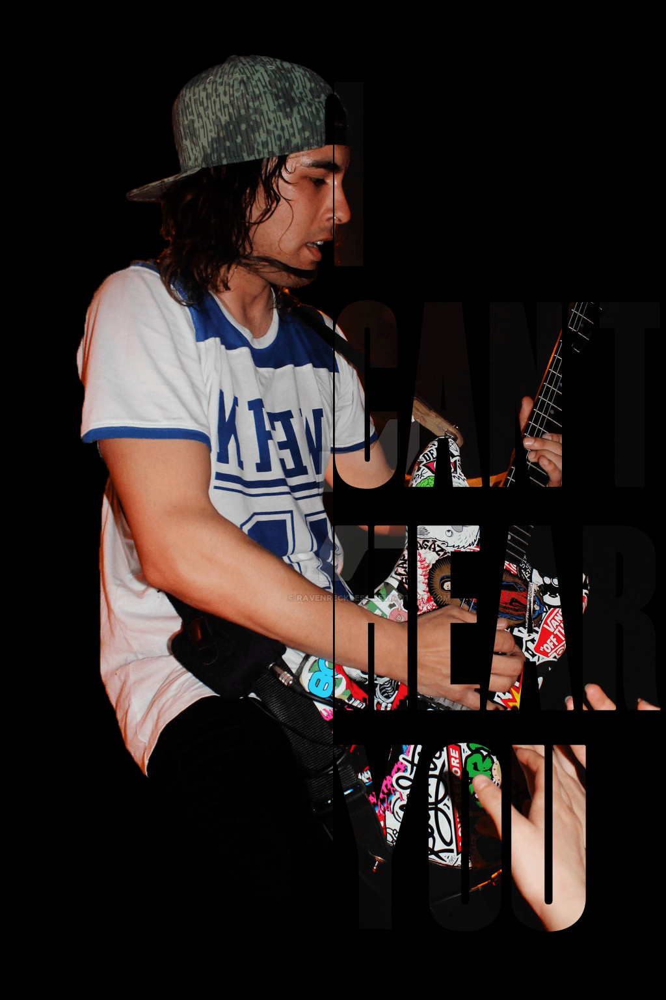
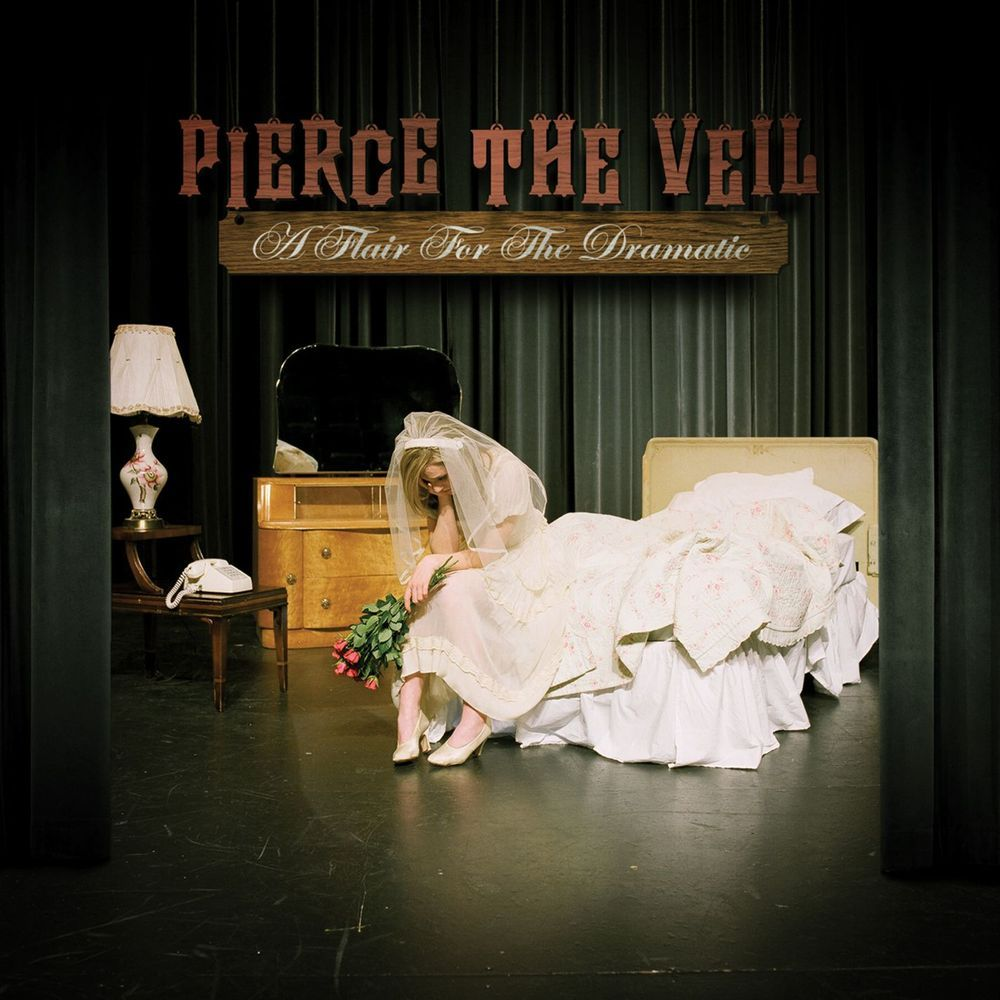
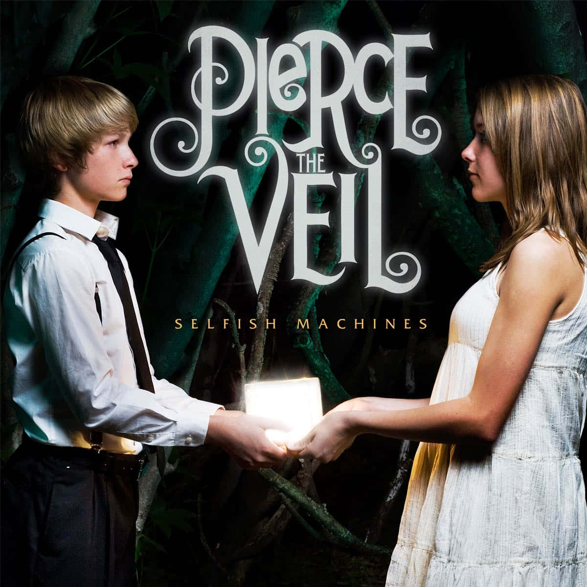

Pierce The Veil is an American rock band that formed in San Diego, California, in 2006. The band was founded by brothers Vic and Mike Fuentes, and Vic Fuentes continues to serve as the band's lead vocalist today. Over the years, Pierce The Veil has become known for blending post-hardcore, punk, and alternative rock influences into a sound that is both energetic and emotionally driven.
Pierce The Veil has been my favorite band for many years, which is one of the main reasons I chose them for this project. Their music has had a lasting impact on me, and I was excited to explore their lyrics through a data-driven lens. By analyzing the language used throughout their songs, I hoped to gain a deeper understanding of recurring themes, word choices, and patterns that may not be immediately noticeable through casual listening alone.



This project focuses on comparing text-based data derived from Pierce The Veil's first two studio albums, A Flair for the Dramatic and Selfish Machines. These albums were selected because they represent an important stage in the band's early development and provide a strong foundation for textual analysis. Additionally, these are my favorite albums across their discography.
To begin the project, I collected the lyrics from every song on both albums and organized them into separate .txt files. The lyrics were scraped from Genius.com and prepared so they could be imported into various text-analysis programs. If you're interested in learning more about this lyric scraper for research purposes, talk to Dr. B!
Once the data was collected, I used Voyant Tools to examine the lyrics from multiple perspectives. Voyant helped identify frequently used words, generate word clouds, and visualize how certain terms appeared throughout each album. These visualizations made it easier to recognize patterns, compare vocabulary between albums, and determine which themes appeared most often.
I also used AntConc to conduct a more detailed analysis. AntConc provided additional insight into how frequently specific words and phrases were used, the contexts in which they appeared, and the relationships between recurring terms. This allowed for a deeper examination of the lyrics beyond simple word counts and visualizations.
Together, Voyant and AntConc offered different but complementary approaches to analyzing the band's songwriting. The findings from both tools helped reveal patterns in language usage and provided a clearer picture of how lyrical themes are expressed across these two albums.
To explore the results of this research, please visit the Voyant and AntConc pages using the navigation menu above.